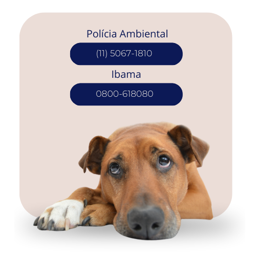

Como denunciar maus tratos?
Denunciar maus-tratos aos animais é um compromisso essencial em prol do respeito à vida e ao bem-estar dos nossos companheiros de quatro patas. Ao assumirmos a responsabilidade de relatar situações de abuso, não apenas protegemos os animais individualmente, mas também contribuímos para criar uma consciência coletiva sobre a importância do tratamento ético e compassivo. Para denunciar, é crucial acionar os órgãos competentes, como a Polícia Ambiental e delegacias especializadas, ou contatar diretamente o IBAMA em casos envolvendo animais silvestres. Detalhes precisos e, quando possível, evidências visuais, fortalecem a denúncia, desempenhando um papel crucial na construção de uma sociedade que repudia qualquer forma de crueldade animal.
